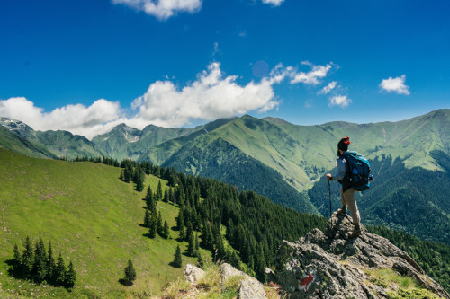

MONTANHISMO POR AMOR

Conheça um pouco sobre montanhismo abaixo.
O montanhismo refere-se a atividade de subir montanhas através de caminhadas ou escaladas.
Considerada também como esporte, essa atividade limita-se a apenas a subida em médias montanhas
– que possuem até 2.500 m de altitude acima do nível do mar. O termo deriva das palavras Montanha + ismo.8 de jan. de 2019
Abaixo confira a vibe uníca do montanhismo representada em vídeo.
Regras do montanhismo
- Faça um planejamento.
- Escolha uma boa companhia
- Divulgue sua viagem
- Atenção aos itens de segurança
- Verifique se os itens são adequados à viagem
- Não se distraia
- Aprenda técnicas de navegação
- Desista da sua aventura se for necessário
Para mais informações sobre o curso click abaixo
Acessecurso.aventura/montanha